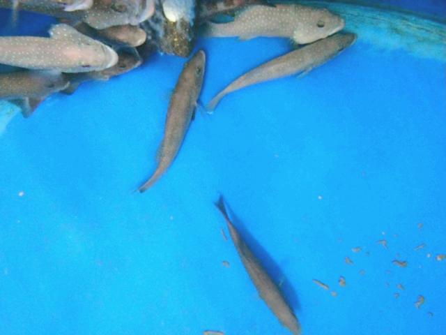
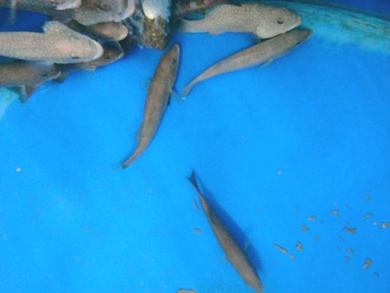
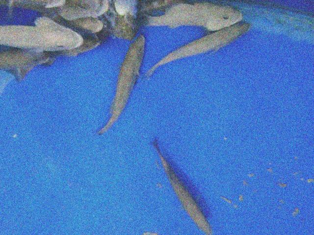
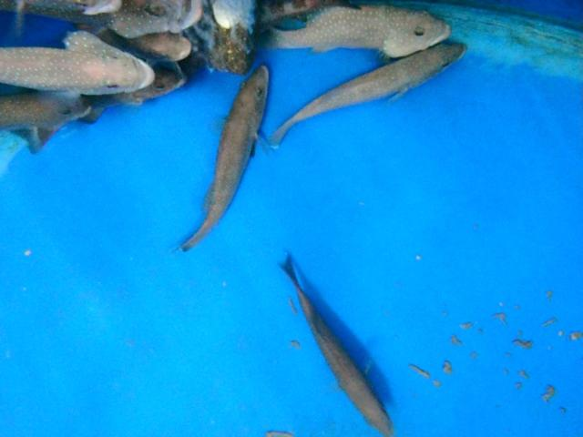
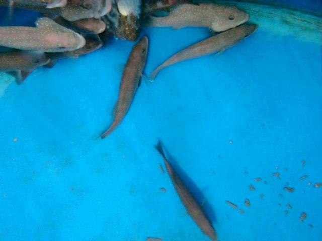
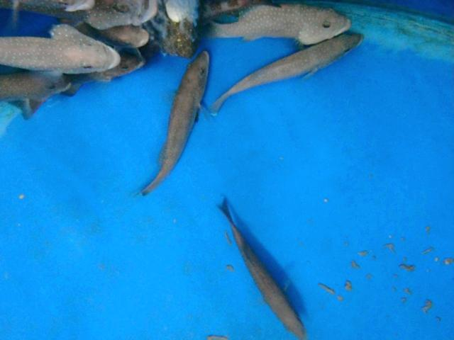
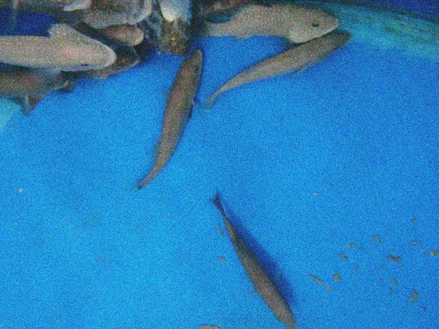

Resultados /
pose-bezierfusion-dataset1-solo_cajas
Precisión 0,0 % 0 aciertos, 0 falsos
Recall 0,0 % 700 no detectados
F1 0,0 % IoU ≥ 0.5
IoU medio – de los aciertos
Error de puntos – de la diagonal de la caja
Tiempo 46 ms por imagen
Modelo best.pt · confianza mínima 0.25 · imagen 1024 px · dataset completo
Dónde acierta y dónde se equivoca
0 de 269 imágenes sin ningún error.
En cada imagen: ✓ acierto (IoU ≥ 0.5), FP detección sin etiqueta, FN etiqueta sin detección.
Clic en una imagen para ver cajas, probabilidades y el mapa de atención.

punto 1 punto 2 punto 3 punto 4 punto 1 punto 2 punto 3 punto 4 punto 1 punto 2 punto 3 punto 4 punto 1 punto 2 punto 3 punto 4
0100.jpg
0 ✓ · 0 FP · 4 FN
punto 1 punto 2 punto 3 punto 4 punto 1 punto 2 punto 3 punto 4 punto 1 punto 2 punto 3 punto 4 punto 1 punto 2 punto 3 punto 4
0101.jpg
0 ✓ · 0 FP · 4 FN
punto 1 punto 2 punto 3 punto 4 punto 1 punto 2 punto 3 punto 4 punto 1 punto 2 punto 3 punto 4 punto 1 punto 2 punto 3 punto 4
0102.jpg
0 ✓ · 0 FP · 4 FN
punto 1 punto 2 punto 3 punto 4 punto 1 punto 2 punto 3 punto 4 punto 1 punto 2 punto 3 punto 4 punto 1 punto 2 punto 3 punto 4
0103.jpg
0 ✓ · 0 FP · 4 FN
punto 1 punto 2 punto 3 punto 4 punto 1 punto 2 punto 3 punto 4 punto 1 punto 2 punto 3 punto 4 punto 1 punto 2 punto 3 punto 4
0104.jpg
0 ✓ · 0 FP · 4 FN
punto 1 punto 2 punto 3 punto 4 punto 1 punto 2 punto 3 punto 4 punto 1 punto 2 punto 3 punto 4 punto 1 punto 2 punto 3 punto 4
0105.jpg
0 ✓ · 0 FP · 4 FN

punto 1 punto 2 punto 3 punto 4 punto 1 punto 2 punto 3 punto 4 punto 1 punto 2 punto 3 punto 4 punto 1 punto 2 punto 3 punto 4
0106.jpg
0 ✓ · 0 FP · 4 FN

punto 1 punto 2 punto 3 punto 4 punto 1 punto 2 punto 3 punto 4 punto 1 punto 2 punto 3 punto 4 punto 1 punto 2 punto 3 punto 4
0107.jpg
0 ✓ · 0 FP · 4 FN

punto 1 punto 2 punto 3 punto 4 punto 1 punto 2 punto 3 punto 4 punto 1 punto 2 punto 3 punto 4 punto 1 punto 2 punto 3 punto 4
0108.jpg
0 ✓ · 0 FP · 4 FN

punto 1 punto 2 punto 3 punto 4 punto 1 punto 2 punto 3 punto 4 punto 1 punto 2 punto 3 punto 4 punto 1 punto 2 punto 3 punto 4
0109.jpg
0 ✓ · 0 FP · 4 FN

punto 1 punto 2 punto 3 punto 4 punto 1 punto 2 punto 3 punto 4 punto 1 punto 2 punto 3 punto 4 punto 1 punto 2 punto 3 punto 4
0110.jpg
0 ✓ · 0 FP · 4 FN

punto 1 punto 2 punto 3 punto 4 punto 1 punto 2 punto 3 punto 4 punto 1 punto 2 punto 3 punto 4 punto 1 punto 2 punto 3 punto 4
0111.jpg
0 ✓ · 0 FP · 4 FN